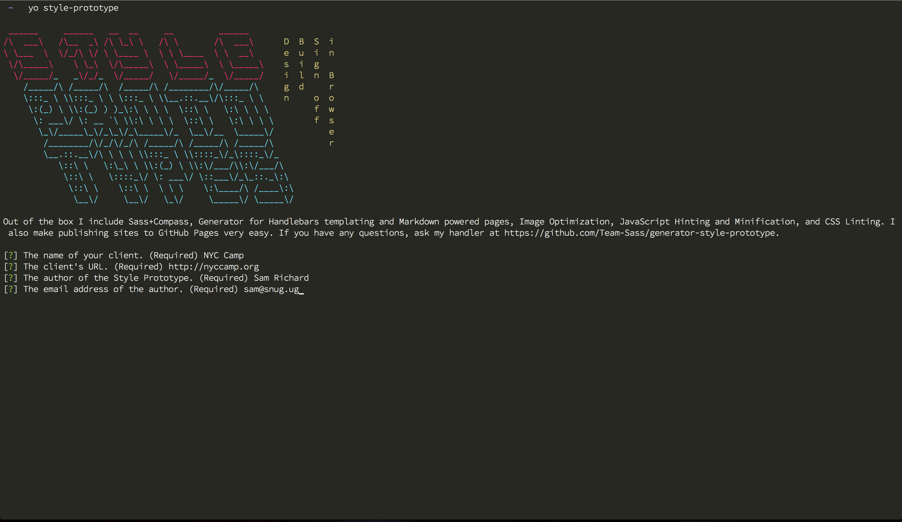

Style Prototyping
Who Am I?
- Sam Richard
- Sr. Front End Developer, NBCUniversal
- Snugug on Twitter, GitHub, The Internet
- Co-Organizer of Team Sass, SassConf


The Answer Is…
The Only Web Design Tool
Guess what. The web’s not a laser printer.
Karen McGrane
These are Graphic Design Tools
This is a Farming Tool
While you may be able to hammer in a screw, it's the wrong tool for the job
Pick the right tool for the job.
Don't be the farmer with a hammer and a box of screws
The Page Metaphor Is Killing The Web
We need to build Systems of Style
We need to build them In Browser
With the tools of web design
Design Focus

Users come to your site for the content, so you should design content first.
Your content and your site needs to be predictable in order to be useful.
Your site needs to be fast and reliable in order to be usable.
You need a style that will reflect your brand and can be carried from your content up
Only after all other needs have been met should you focus on visual flair
Visual flair should not negatively effect any of the other needs
Designing Content
Style Tiles
Style Tiles provide a way for you to suss out branding in a content-driven way
Style Tiles are driven by text, colors, patterns, and adjectives
This is trivial to do in browser

Plus, you can do responsively!


By designing our content in-browser, we're able to use real web fonts with real web rendering and kerning across multiple platforms
We are also able to see immediately how our typography decision affect performance

Designing Baselines
Style Guides
By designing a style guide, we are able to create a site-specific CSS Reset
Makes sure that all native elements have baseline styles.
All larger components are pieces of smaller native elements

Designing Systems
Component Guides
Component Guides are a must for being able to provide consistency for your users
Similar pattern with different flair reduce cognitive load, making your site easier to use


We can create a generalized set of markup, apply CSS and JavaScript, and have a reusable component for our site


By finding patterns in our content, we are able to build reusable components
Components reduce our maintenance cost and make using our sites easier
Color Guides
Oh, and we can make color guides so we don't need to grasp for colors anymore

Style Prototypes
Style Prototypes
A Yeoman Generator designed for building in-browser Style Tiles, Style Guides, Component Guides, and Color Guides
npm install -g generator-style-prototypeyo style-prototype
Style Prototypes use Grunt for task running, Sass+Compass for CSS, Handlebars for HTML, and Bower for package management
When you're finished, you can easily deploy your finished prototype to GitHub Pages or your own server
You can also build a Compass Extension to provide a way to drop the finished styling directly into any project
Designers and developer working together
On one codebase
Speaking the same language
A fully integrated agile cycle
Finally
Thank You
Slides available at
http://snugug.github.io/Style-Prototyping